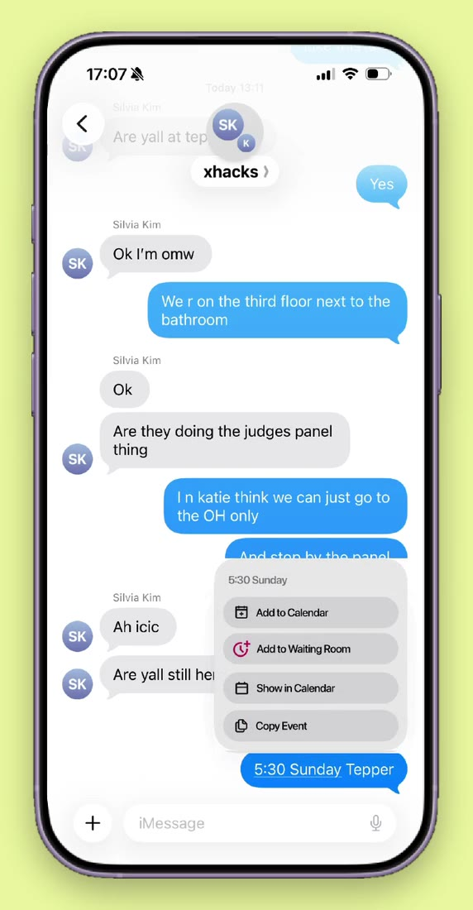
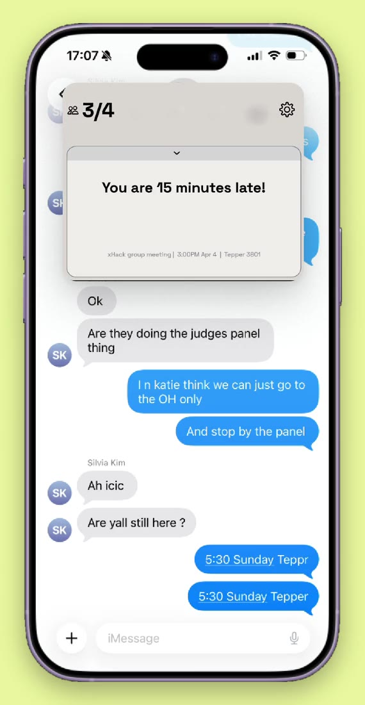
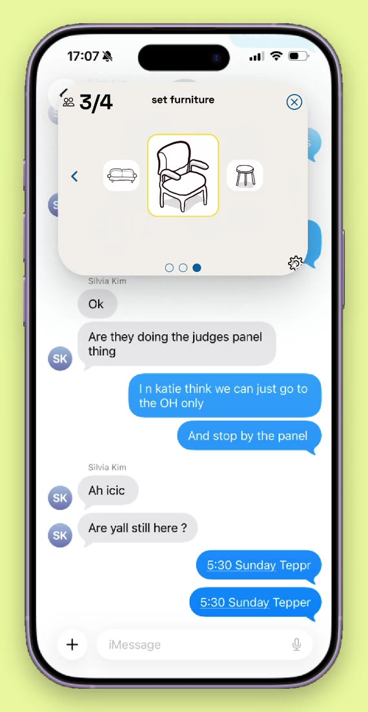
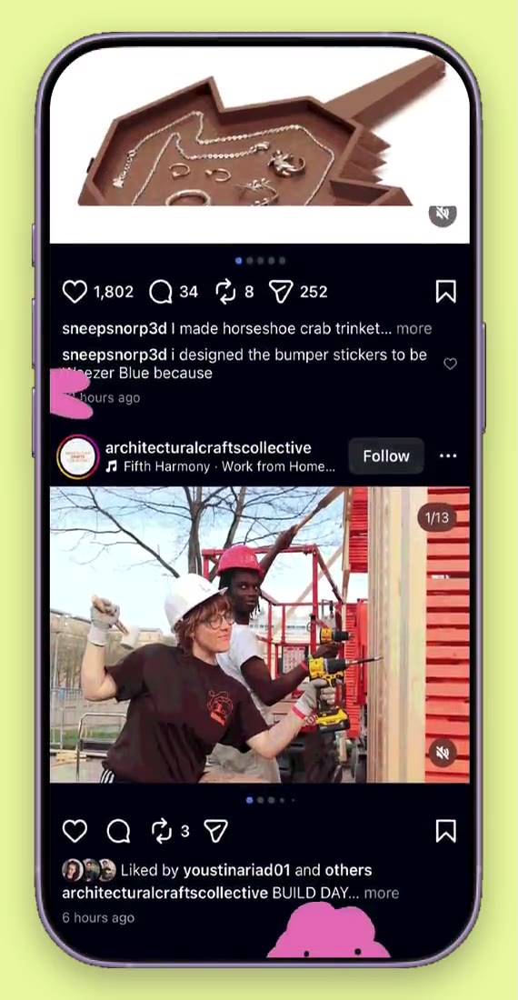
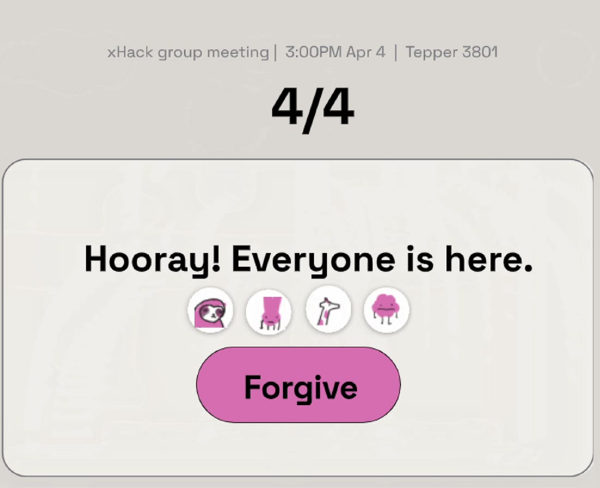
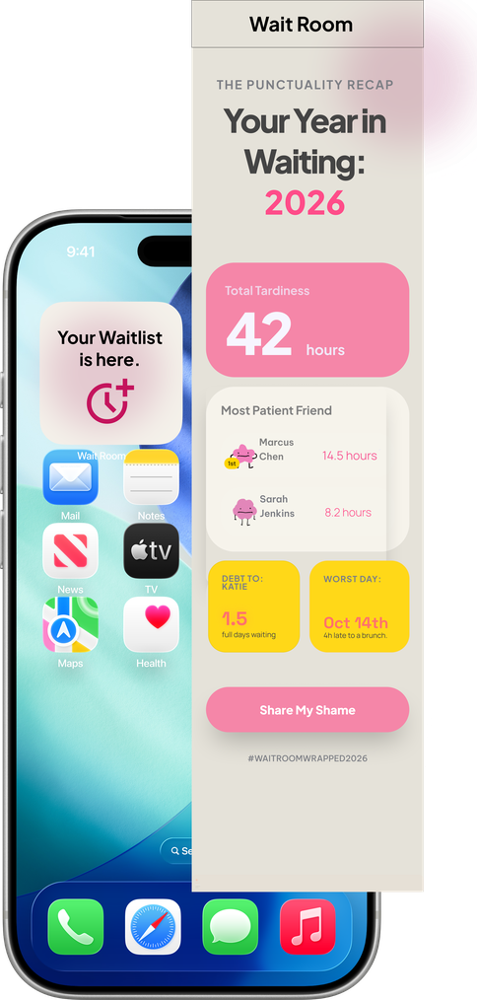

XHacks 2026 · Best Presentation Prize
Wait Room
Context
Wait Room is an iPhone widget that lives within iMessages, allowing you to schedule events, add guests, and track their progress in one application. Wait Room is used for casual social events and it is a product that aim to make waiting for late guests no longer frustrating but delightful.
This Project is done in a three-people team for XHacks 2026. We were selected into the final round and won the Best Presentation Prize for clear storytelling and design rationale.
The problem
We’ve all experienced the frustration of waiting on someone who’s late. The person waiting often feels awkward having to ask for updates, while the late person has to manually send progress messages. There’s little real visibility into what “5 minutes away” actually means, creating uncertainty on both sides. As a result, the waiting experience becomes isolating and tedious.
Design goals
We aim to create an effective yet playful product that reduces the friction around being late. Through seamless, low-effort integration, shared visibility, and lighthearted interactions, it keeps users informed, present, and connected. Wait Room reframes lateness with clarity and humor rather than guilt.
Features
Planning
Launch events seamlessly within your group chat. No friction from switching apps.

Tracking and the Wait Room
Interactive Timeline turns when the event approaches. The timeline tracks based on the distance between the person to the destination. Wait Room turns waiting into something you can see and feel.

Customization
Make the wait room yours. Customize avatars and furniture while waiting in the room. Adding personal status and update it to the late people. Costume settings to keep your privacy and preferences.

Friendly Nudges
Playful nudges of your avatar pop up on whatever current pages the late people are at. A friendly and interesting reminder make staying in sync effortless and almost non-invasive.

Ending the Wait Room
When the group is complete and every members arrive, the post could press “forgive” to forgive the late people and end the wait.

Lateness Annual Wrap
We turn everyday delays into data you can laugh about and share. The wrap shows how many hours you are late within a year, most patient friend who arrives early all the time, and the worst day that you are late for the longest time. Still, the feature means to be playful and non-offensive, but give you a little reminder to be better next year.
